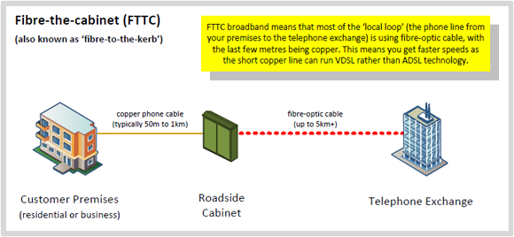
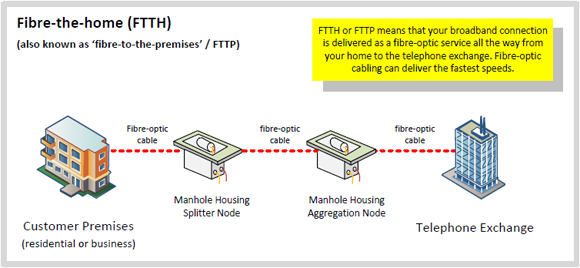

Fibre Broadband (FTTC / FTTH) Guide

What is fibre broadband?
Fibre broadband is a new type of broadband that is currently being deployed in the UK by BT, Virgin Media and other operators which uses fibre optic cables to help increase the speed of your broadband connection. It is often referred to as 'super-fast broadband' or 'next-generation broadband' as it offers faster speeds than have been available to date using older generation networks. It is available to both home and business users. There are generally two types of fibre broadband connections
Fibre to the cabinet (FTTC)
Fibre-to-the-Cabinet (FTTC) involves running fibre optic cables from the telephone exchange or distribution point to the street cabinets which then connect to a standard phone line to provide broadband. This is combined with a copper cable from the cabinet to the home or business which uses VDSL or similar technology that can deliver much faster speeds over shorter distances.

Fibre to the home / premises (FTTH or FTTP)
Fibre-to-the-Premises (FTTP), also often referred to as Fibre-to-the-Home (FTTH) provides and end-to-end fibre optic connection the full distance from the exchange to the building and can deliver faster speeds than FTTC as there is no copper leg at all.

While the image showns the fibre going underground which is the most common method, fibre can be run between telephone poles and the splitter node can be mounted onto a pole too.
How fast is fibre broadband?
Fibre to the Cabinet (FTTC) broadband comes in three main variants which offer a downstream line connection speed of 80 meg (80 Mbps), 55 meg (55 Mbps) or 40 meg (40 Mbps), but the actual maximum throughput speed of the service will be slightly lower than this at around 76 / 52 / 38 Mbps. Different upstream speeds are available at either 2Mbps or 10Mbps on the 40 Mbps variant, with 10 Mbps on the 55 Mbps version and finally 20 Mbps up on the 80 Mbps.
everyone will receive the maximum speed as it depends on the length of your phone line to the cabinet which is providing your broadband service, it should be noted that since all the FTTC services rely on the same VDSL2 technology that unless you are getting the maximum speed from a 40 Mbps product upgrading to a 55 or 80 Mbps product will not boost your speeds.
If you already have fibre broadband, why not try our broadband speed test to see how fast your connection is. It is best to carry out speedtests at a variety of times, both peak and off-peak, as at peak times the congestion in the retailers network may affect your speed significantly. Our tbbMeter tool will let you keep an eye on your browsing and download speeds when using your connection, plus has a variety of testing tools built into it.
If you are lucky enough to live in an area that will receive Fibre to the Premises (FTTP full fibre), download speeds of 330Mbps and upstream speeds of 30Mbps are available. The FTTP products offer the same speed options as on FTTC (at the same price) and also faster versions at 100meg down /15 meg up, 110/15meg, 100/30meg, 330/20meg, and 330/30meg. Further speed upgrades for full fibre to 1Gbps (1000Mbps) are expected to be on sale later in 2017. The massive advantage FTTP has is that the connection speed is not affected by distance.
What speed can I expect from fibre broadband? (FTTC/VDSL2)
The speed of your connection will vary depending on the distance to the fibre cabinet that serves your house. If you know roughly how far the cabinet is, you should be able to calculate the speed you should receive based on the figures in the table below:
| Distance to cabinet (metres) | Estimated downstream connection speed | Estimated upstream connection speed | Cumulative %'age of premises at this distance |
|---|---|---|---|
| 100m | 100Mbps | 25Mbps | 5% |
| 150m | 80Mbps | 20Mbps | 10% |
| 200m | 65Mbps | 18Mbps | 20% |
| 300m | 45Mbps | 17Mbps | 30% |
| 400m | 42Mbps | 16Mbps | 45% |
| 500m | 38Mbps | 15Mbps | 60% |
| 600m | 35Mbps | 14Mbps | 70% |
| 700m | 32Mbps | 11Mbps | 75% |
| 800m | 28Mbps | 10Mbps | 80% |
| 900m | 25Mbps | 9Mbps | 85% |
| 1000m | 24Mbps | 8Mbps | 90% |
| 1250m | 17Mbps | 5Mbps | 95% |
| 1500m | 15Mbps | 4Mbps | 98% |
The distance estimates are designed so that we expect the vast majority to exceed these guideline figures, and for individuals factors outside your control such as whether the Openreach VDSL2 cabinet is ECI or Huawei based will have an impact. Additionally so will the parameters set by the Dynamic Line Management system and whether options like G.INP, lower target noise margins are vectoring are being used on your line.
Technologies such as FTTP and DOCSIS (cable broadband) are fixed speed connection technologies so you will get the connection speed you pay for, of course the speeds you see from speed tests may not always reach the maximum speed that the connection speed allows.
FTTC/FTTP routers
FTTC for a number of years required an engineer to visit to install it, but this has not been the case for a couple of years now, meaning you can easily upgrade from ADSL to FTTC without any need to be at home on the day of the switchover.
FTTP is an engineer installed product since the final run of fibre from the street into your home needs to be physically done, it can be done in a single visit but this depends on the type of figure configuration in your area. You will need to connect a device that supports PPPoE to the Openreach ONT (fibre modem) and generally the broadband provider should have posted this to you ahead of the install date. This is usually a standard 'broadband router' or 'cable modem' router which has a Ethernet WAN port (sometimes labelled EWAN).
If you currently have an older ADSL router with a built in ADSL modem, this will NOT work with the FTTC or FTTP services and you will need to get a new router, that has the correct type of Internet interface.
Gigaclear who install full fibre in rural areas supply a DIY fibre install kit, so that you can install the fibre across your gardern and into your home as part of the standard activation fee. If you need assistance engineer install options are available with the price varying based on the distance involved.